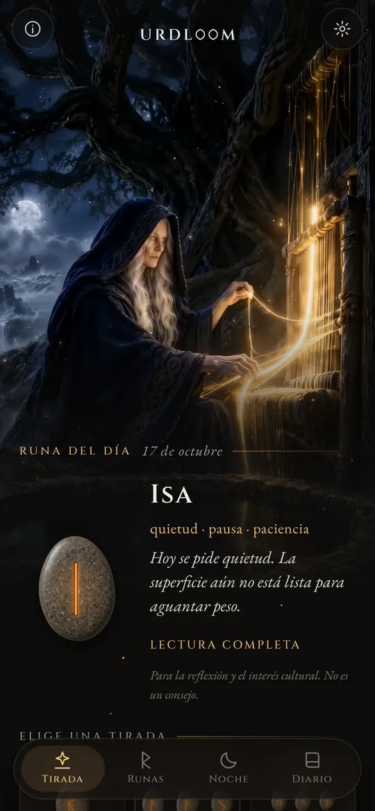
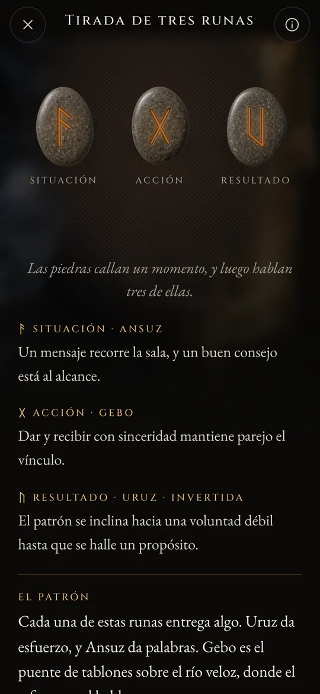
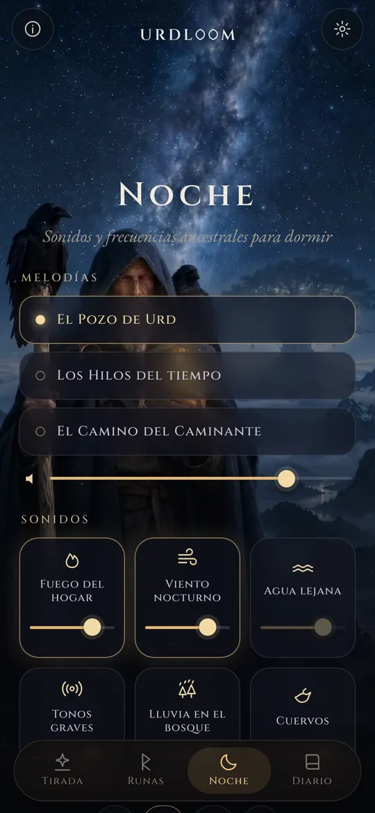
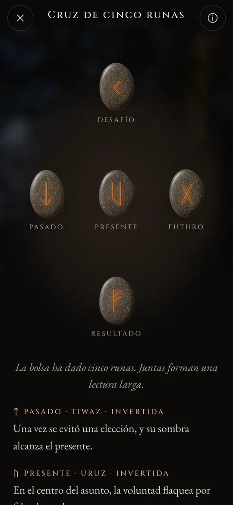

Lecturas de runas del pozo del destino.
Lanza el Elder Futhark, lee lo que cae con la voz de los viejos poemas y deja que los sonidos de la noche te lleven hasta el sueño.
Tres mujeres junto a un pozo
En los antiguos poemas nórdicos, tres Nornas se sientan junto a un pozo bajo Yggdrasil, el árbol del mundo. Riegan sus raíces, tallan varas y disponen la vida de todos los que nacen. La mayor es Urd. Su nombre significa lo que ya ha sucedido, y el pozo lleva su nombre.
Urdloom toma su nombre de ella y del telar en el que, según se decía, se tejía el destino. La app conserva ese ambiente: una bolsa de piedras en tu mano, un paño en el suelo y lecturas escritas con la voz de las sagas, no con la de un horóscopo.

De allí vienen doncellas, sabias en mucho, tres, del lago que hay bajo el árbol.Völuspá, estrofa 20
Sostén, agita, suelta
Sostén la bolsa y las piedras repiquetean en tu mano. Suéltala y vuelan hacia el paño, ruedan, se asientan y se dan la vuelta una a una. Debajo aparece la lectura.

Una runa
Una sola piedra para el día que empieza, o para una pregunta que se responde con sí o no. Basta un toque para lanzarla.


Tirada de tres runas
Situación, acción, resultado. Se leen de izquierda a derecha como una saga breve y luego juntas: un hilo final muestra cómo se hablan entre sí.

Cruz de cinco runas
Pasado, presente y futuro en la línea central, el desafío arriba y el resultado abajo, y tú en el corazón de todo.




Cada lectura se escribió a mano: las veinticuatro runas, cada pareja y las 2024 combinaciones de tres, en cada uno de los veintidós idiomas. Nada se genera mientras esperas.

Las veinticuatro runas
El Elder Futhark es el alfabeto rúnico más antiguo y se talló aproximadamente entre los siglos II y VIII. Sus veinticuatro signos se agrupan en tres familias de ocho, llamadas ætts, cada una con el nombre del dios cuya runa la encabeza. Toca una piedra para leerla.
El ætt de Freyr
El ætt de Hagal
El ætt de Tyr
Los nombres de las runas conservan su forma antigua en todos los idiomas. Son los nombres de los propios signos, reconstruidos por los estudiosos a partir de los poemas rúnicos y de los alfabetos más antiguos.
Breve historia de las runas
Antes que cualquier otra cosa, las runas son letras. Los pueblos germánicos las tallaron en madera, hueso, metal y piedra durante unos mil quinientos años. Así llegaron hasta nosotros los signos y la vieja costumbre de echar suertes.

Suertes sobre un paño blanco
El historiador romano Tácito cuenta que los germanos cortan en tablillas una rama de árbol frutal, las marcan con signos y las esparcen sobre un paño blanco. Un sacerdote o el cabeza de familia levanta tres, una tras otra, y las interpreta. No dice que esos signos fueran runas, pero el gesto es el mismo que conserva Urdloom.
Las primeras inscripciones
Un peine de hueso hallado en la turbera de Vimose, en Dinamarca, lleva una de las inscripciones rúnicas más antiguas que se conocen, una sola palabra: harja. Puntas de lanza, broches y amuletos de esos mismos siglos muestran que la escritura ya se había extendido por todo el norte.
La serie entera en una piedra
En la piedra de Kylver, en Gotland, alguien talló los veinticuatro signos en su orden, el futhark completo más antiguo que conservamos. La serie toma su nombre de sus seis primeras letras: f, u, th, a, r, k.
Los cuernos de oro
Uno de los dos cuernos de oro de Gallehus, en Dinamarca, lleva un verso aliterado: Yo, Hlewagastiz, hijo de Holt, hice el cuerno. Es uno de los versos más antiguos de cualquier lengua germánica.
Dieciséis signos para la era vikinga
En Escandinavia el alfabeto se reduce a dieciséis signos, el futhark joven. Con sus letras se levantan miles de piedras conmemorativas, entre ellas las grandes piedras de Jelling, en Dinamarca.
Los poemas se ponen por escrito
Escribas islandeses ponen por escrito los poemas éddicos. En la Völuspá, las Nornas se sientan junto al pozo de Urd; en el Hávamál, Odín pende nueve noches del árbol azotado por el viento y toma las runas con un grito.
Un verso para cada runa
Los poemas rúnicos de Noruega e Islandia, junto con uno anglosajón más antiguo, dan a cada runa un verso breve: el ganado siembra discordia entre parientes, el granizo es el más frío de los granos, el hielo es muy resbaladizo. Buena parte de lo que se sabe sobre el significado de las runas procede de estos versos.
Leer de nuevo
Usar las runas para reflexionar es un renacer moderno, levantado sobre esos poemas y sobre las imágenes de las Eddas. Urdloom se sitúa abiertamente en esa tradición: no pretende ser un oráculo antiguo, solo leer los viejos signos con cuidado.

Sonidos y frecuencias ancestrales para dormir
Cuando el día termina, el caminante sale bajo las estrellas. Elige una melodía, pon sonidos encima y programa un temporizador. Los sonidos siguen con la pantalla apagada y se desvanecen por sí solos.
Tres melodías: El Pozo de Urd, Los Hilos del tiempo y El Camino del Caminante, construidas sobre canto de garganta, tambor de marco y tagelharpa de arco.
Seis capas para mezclar, cada una con su propio volumen: fuego del hogar, viento nocturno, agua lejana, tonos graves, lluvia en el bosque y cuervos.
Cada sonido se creó para Urdloom. Nada se reproduce desde internet.
Pequeñas cosas que importan
- Una runa cada mañana
- Una piedra te espera boca abajo en la primera pantalla. Si quieres, cada mañana una breve nota te dice qué runa se sacó para ti.
- Un diario
- Guarda las lecturas que te dicen algo, junto con la pregunta que hiciste.
- Lecturas para compartir
- Envía una lectura como imagen: las piedras tal como cayeron y las palabras debajo.
- Veintidós idiomas
- Cada uno escrito y revisado por personas que lo leen, con letra y tamaño que puedes cambiar.
Lo que pasa aquí se queda aquí
Urdloom funciona sin internet. No tiene cuenta, ni registro, ni publicidad, y no contiene ningún tipo de análisis ni seguimiento. Tus preguntas, tus lecturas y tu diario se quedan en tu teléfono.
PrivacidadPreguntas
¿Urdloom predice el futuro?
No. Las lecturas son para la reflexión y el interés cultural. Señalan, como lo hacían las antiguas runas, y el sentido toma forma en tu propia vida. Nada en la app es asesoramiento médico, financiero, legal ni profesional de ningún otro tipo.
¿Por qué el lenguaje suena antiguo?
Las runas vienen de un mundo de poemas, sagas y acertijos. Escribimos las lecturas con esa voz a propósito y las mantuvimos tan cerca de la tradición rúnica como pudimos, en cada idioma.
¿Necesito conexión a internet?
No. Todo, desde las lecturas hasta los sonidos de la noche, está dentro de la app.
¿En qué idiomas está?
Inglés, turco, alemán, francés, español, italiano, portugués, ruso, ucraniano, polaco, neerlandés, sueco, noruego, finés, griego, árabe, hindi, indonesio, japonés, coreano, chino y albanés.
Escríbenos
Preguntas, una palabra que suena mal en tu idioma o una lectura que se te quedó dentro: leemos todos los mensajes.
support@urdloom.com